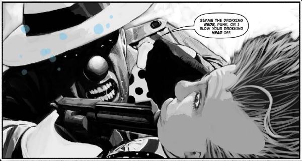

Jack Point is an undercover (Wally Squad) Judge, romantically linked to ex-Judge and private investigator Galen DeMarco.
Art by Frazer Irving
| Story Title | Parts | Pages | w indicates a wraparound coverCovers | Year(s) | Issues | Writer | Artist | Colourist | Letterer |
|---|---|---|---|---|---|---|---|---|---|
From Mega‑City Noir[The Simping Detective] | 1 | 6 | 0 | 2004 | M220 | Simon Spurrier | Frazer Irving | [greyscale] | Tom Frame |
Linked to [Raptaur]Crystal Blue | 3 | 24 | M222: Frazer Irving 1 | 2004 | M221-223 | Simon Spurrier | Frazer Irving | [greyscale], [spot color] | Tom Frame |
Linked to: DeMarco P.I. Judge Dredd [Raptaur]Innocence: A Broad | 3 | 24 | M226: Frazer Irving 1 | 2004 | M224-226 | Simon Spurrier | Frazer Irving | [greyscale] | Tom Frame |
Linked to: Judge Dredd [Raptaur]Playing Futsie | 3 | 24 | M234: Frazer Irving 1 | 2005 | M234-236 | Simon Spurrier | Frazer Irving | [greyscale], [two-tone] | Tom Frame |
Linked to DeMarco P.I.Fifteen | 1 | 6 | 0 | 2005 | M237 | Simon Spurrier | Frazer Irving | [greyscale], [spot color] | Tom Frame |
Linked to [Raptaur]Petty Crimes | 2 | 16 | 0 | 2005 | M238-239 | Simon Spurrier | Frazer Irving | [greyscale], [spot color] | Tom Frame |
Linked to: DeMarco P.I. [Raptaur]No Body, No How | 5 | 30 | 0 | 2006-2007 | M253-257 | Simon Spurrier | Frazer Irving | [greyscale], [spot color] | Ellie de Ville |
| Trifecta | |||||||||
Linked to: DeMarco P.I. [Dirty Frank] Judge Dredd Low Life [Raptaur] Part of the Trifecta build‑up.Jokers to the Right | 8 | 42 | 1804: Cliff Robinson & Dylan Teague (C) 1809: Tiernen Trevallion 2 | 2012 | 1804-1811 | Simon Spurrier | Simon Coleby | [spot color] | Simon Bowland |
From Low Life Part of the Trifecta build‑up.Saudade | 7 | 41 | 1805: D'Israeli 1811: D'Israeli 2 | 2012 | 1805-1811 | Rob Williams | D'Israeli | [b&w] | Ellie de Ville |
From Judge Dredd Part of the Trifecta build‑up. Featuring Judge Buell.The Cold Deck | 6 | 36 | 1808: Edmund Bagwell 1 | 2012 | 1806-1811 | Al Ewing | Henry Flint | Chris Blythe | Annie Parkhouse |
Linked to: DeMarco [Dirty Frank] [Judge Griffin] Judge Hershey [Judge Maitland] [Judge McGruder] [Judge Smiley] [Raptaur] [Sensitive Klegg] Has three supertitles: ‑ Judge Dredd ‑ Low Life ‑ The Simping DetectiveTrifecta | 1 | 28 | Cliff Robinson & Dylan Teague (C) 1 | 2012 | 1812 | Al Ewing Simon Spurrier Rob Williams various | Carl Critchlow | <-- | Simon Bowland |
| >> Text Stories << | |||||||||
| Dorks of War | 1 | 6 | 0 | 2004 | M227 | Simon Spurrier | Frazer Irving | [greyscale] | n/a |
| >> Features << | |||||||||
From ComicanaTrifecta: Best Laid Plans | 1 | 3 | 0 | 2013 | M333 | Michael Molcher | reprints & designs | <-- | n/a |
| year | episodes | pages |
| 1998 | 0 | 0 |
| 1999 | 0 | 0 |
| 2000 | 0 | 0 |
| 2001 | 0 | 0 |
| 2002 | 0 | 0 |
| 2003 | 0 | 0 |
| 2004 | 7 | 54 |
| 2005 | 6 | 46 |
| 2006 | 1 | 6 |
| 2007 | 4 | 24 |
| 2008 | 0 | 0 |
| 2009 | 0 | 0 |
| 2010 | 0 | 0 |
| 2011 | 0 | 0 |
| 2012 | 22 | 147 |
| 2013 | 0 | 0 |
| 2014 | 0 | 0 |
| 2015 | 0 | 0 |
| 2016 | 0 | 0 |
| 2017 | 0 | 0 |
| 2018 | 0 | 0 |
Comic strip data (excludes other content):